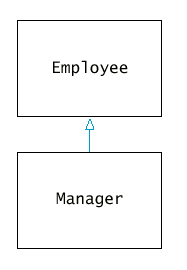
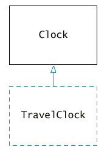
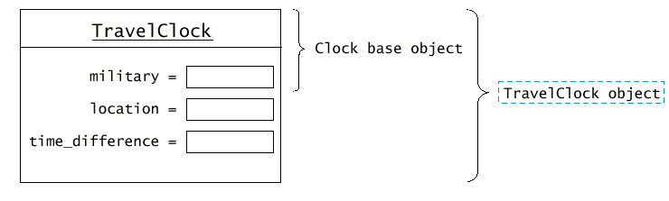

class Manager : public Employee {
public:
new member functions
private:
new data members
};
|
Syntax 11.1 : Derived Class Definition class Derived_class_name : public Base_class_name
|
Manager m;
m.set_salary(68000);
class Manager : public Employee {
public:
Manager(string name, double salary, string dept);
string get_department() const;
private:
string department;
};

|  |  |
TravelClock clock("New York", 3);
cout << "The time in " << clock.get_location() << " is "
<< clock.get_hours() << ":" << clock.get_minutes();
class TravelClock : public Clock
{
public:
TravelClock(bool mil, string loc, double off);
int get_hours() const;
string get_location() const;
private:
string location;
int time_difference;
};
TravelClock::TravelClock(bool mil, string loc, int diff)
: Clock(mil)
{
location = loc;
time_difference = diff;
while (time_difference < 0)
time_difference = time_difference + 24;
};
|
Syntax 11.2 : Constructor with Base-Class Initializer Derived_class_name :: Derived_class_name(expressions)
|
if (is_military()) /* clock uses military time */
return (h + time_difference) % 24;
int TrvaelClock::get_hours() const
{
int h = Clock::get_hours(); /* calls base-class function */
. . .
}
int TravelClock::get_hours() const
{
int h = get_hours(); /* calls itself */
. . .
}